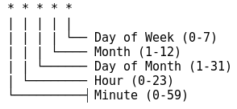

Quick Documentation
Create and edit Schedule configurations,
wich are used by the crawljob-configuration.
The server-side cron implementation uses the library cront4j. Cron4j Documentation.

Valid from/to is used when a special occasion occours. e.g election campaign.